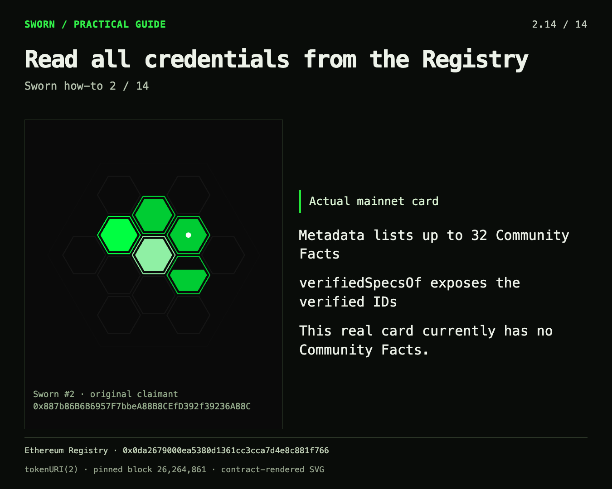

This reference binds the handbook to the launch-2404 contract release. It is a documentation snapshot dated 25 October 2026, not a live dashboard. Historical wallet examples were captured on 24 October 2026 at Ethereum block 26,264,861; the original deployment check is older. Supply, current oracle prices and newly registered facts must be read again before a live decision.
Documented deployment
| Item | Pinned value |
|---|---|
| Chain | Ethereum mainnet, chain ID 1 |
| Contract source | c4ff3238390fc51962fb67e86affc20cf418126e |
| Registry start block | 26,242,885 |
| Registry | 0x0da2679000ea5380d1361cc3cca7d4e8c881f766 |
| Composer | 0xf564dd76bd081554170c5e0b78144abfb39f7061 |
| Renderer | 0x3039eaf3b979759c77a2a3fc62850f9534162c3b |
| WhitelistCurator | 0xcb0b0531e86a9ac36fa865ca8e3dbccf047fda91 |
| IMD token | 0xd34a99bc0f67ae1bbd63c660e6d0b0dd03e263b7 |
| Intake | 0xa43e6f75ee006411f79ac1c84120606c2330de82 |
| Configured attester | 0x5598aa9146215bc13eb26f2c692ad1461fd32982 |
| BurnExecutor | 0xe29386719c155b6847ad5a4e97c6674f10ffc750 |
Download the published deployment-manifest copy. Cross-check the contract task, pinned source and Registry on Etherscan. A historical manifest alone does not verify current external-service compatibility.
The built-in catalog
There are 25 facts across 13 families, not 25 separate cells. Direct tiers are cumulative. Renderer display choices do not make higher and lower tiers mutually exclusive. This table summarizes predicates; the source recipe and its exact window govern verification. Catalog source.
| ID | Fact | Meaning and evidence class |
|---|---|---|
| 101 | Spawned | Joined WhitelistCurator; direct. |
| 201 | Zero-Shot | First participation by hour 1; direct. |
| 202 | Zero-Shot | First participation in hour 0; direct. |
| 301 | Hopper | At least 3 deposits; direct. |
| 302 | Hopper | At least 5 deposits; direct. |
| 303 | Hopper | At least 10 deposits; direct. |
| 401 | Bullfrog | Largest single send at least 1 ETH; direct. |
| 402 | Bullfrog | Largest single send at least 10 ETH; direct. |
| 403 | Bullfrog | Largest single send at least 100 ETH; direct. |
| 404 | Bullfrog | Largest single send at least 800 ETH; direct. |
| 501 | Benchmarked | At least 1,000 Curator points; direct. |
| 502 | Benchmarked | At least 3,162 Curator points; direct. |
| 503 | Benchmarked | At least 10,000 Curator points; direct. |
| 601 | Swarmed | Qualifying seat-operation evidence with at least 3 accepted feedback entries under the fixed recipe; panel evidence. |
| 701 | Uptime | A qualifying deposit during hours 24–65; wallet-specific chain evidence. |
| 801 | Holdout | A deposit in hour 64; wallet-specific chain evidence. |
| 901 | Final Token | A deposit in hour 65, the final game hour; wallet-specific chain evidence. |
| 1001 | Hotfix | A qualifying hour-saving deposit; wallet-specific chain evidence. |
| 1101 | PID #1 | First-deposit index 1; wallet-specific chain evidence. |
| 1102 | PID #1000 | First-deposit index 1,000; wallet-specific chain evidence. |
| 1103 | PID #10000 | First-deposit index 10,000; wallet-specific chain evidence. |
| 1104 | PID #19522 | First-deposit index 19,522; wallet-specific chain evidence. |
| 1105 | First thousand | First deposit among the first 1,000; wallet-specific chain evidence. |
| 1201 | Top Weights | Top 32 addresses ranked by summed weightAdded; shared chain evidence, followed by wallet application. |
| 1301 | Pretrained | Account nonce at least 20 at Curator deployment; panel evidence. |
Swarmed does not prove three distinct jobs, one human per seat, continuous ownership since mint, or current operator status forever. Its result describes its recorded evidence window. Likewise, cumulative refunded deposit flow is not unique capital, current holdings or a donation total.
Templates and fixed limits
| Property | This release |
|---|---|
| Public community templates | T1 event count; T2 event-field sum; T3 ranked shared list; T4 historical unsigned view comparison; T5 historical account nonce. |
| Catalog-only recipe | T6 seat-operation rule; not a public arbitrary-question template. |
| Panel size / quorum | T1, T2, T4: 5 / 3. T3, T5, T6: 11 / 7. Direct facts: no panel. |
| Evidence mode | T1–T4: chain. T5–T6: panel. Both modes still rely on oracle attestation. |
| Community ID range | 10001–65534 inclusive: 55,534 possible registrations. |
| Rule mutability | Immutable after registration; corrections need a new ID. |
| Name | 1–32 permitted ASCII characters: letters, digits, spaces, dots and hyphens. |
| Item/signature | At most 256 bytes, with supported exact event/function grammar. |
| Event constraints | Named parameters, no anonymous event, at most 3 indexed parameters; claimant/group field must be an indexed address; sums use unsigned integer fields. |
| T1–T4 window | At least 7,200 blocks inclusive; closing block at least 64 blocks behind the registration height bound. |
| T5 window | One historical block, at least 7,200 blocks old under that bound. |
| Shared ranking head | 1–32 entries; complete canonical answer required. |
| Personal request | Exactly one fact ID per upgrade call; one pending request per wallet/fact pair. |
| Card mint | Once per original wallet, even if the NFT is later transferred. |
| Community metadata display | First 32 accepted community IDs, in acceptance order. |
| Community artwork | First 39 facts add cell rings; counts from 40 advance the stepped frame. |
| Full community credentials | Read verifiedSpecsOf; the 32-entry display limit is not a credential limit. |
These are contract-bound limits, not all of the current IMD service’s request/body limits. Spec grammar, Composer, Renderer, current IMD reference.
Fees and permanence
The Registry constants are 0.1 IMD for Mint Card and 6.4 IMD for Mint Rule, plus transaction gas. Solidity spells the 18-decimal unit with the ether denomination in these constants; the payment asset is IMD, not ETH. Oracle requests pay a separately read current Intake price. 0.5 IMD was a historical observation, not a promise in this handbook. Applying a stored shared fact has no additional oracle price; its transaction still needs gas.
Card and rule fees are forwarded to the configured BurnExecutor. The subsequent bridge and Base burn are asynchronous external steps, not something a Registry receipt proves complete. The Registry itself accepts no ETH. A frontend’s ETH purchase route is a separate funding convenience, with its own execution and price risks. Sponsored claims and holder allowances from older versions are not features of this release. Registry source, release disclosure.
Recorded oracle facts do not expire merely because the underlying world changes. The signed answer has an acceptance expiry; the accepted stored credential is historical. The Registry has no owner-driven edit, pause or upgrade path. Those properties make the record predictable but make a changed attester, Intake protocol or broken fixed dependency a migration problem.
Real artwork, historical evidence
This image was decoded from authentic Registry tokenURI(2) at block 26,264,861 during the previous read-only study. It is reused unchanged. It is not a newly minted card, a fresh read, a synthetic community-ring example, or proof that the viewer owns its claimant. Historical metadata.

Reused explanatory image from 24 October 2026. “Currently” inside the image refers to that historical capture. It must not be read as a current count of community facts. The full credential read and the display cap remain different concepts.
Sources and reuse ledger
| Material | How this handbook uses it |
|---|---|
| Prior fact-types, community-facts and consuming-cards how-to threads, 24 October | Reuses the progression, practical examples, original-claimant distinction and explanatory images. |
| Prior mainnet evidence study, block 26,264,861 | Reuses the four-candidate allowlist and unchanged card image, explicitly dated. It does not reassert old supply or quote values as current. |
| Prior content/storyline and mint reviews | Carries forward clear stages, receipt-versus-result distinctions, explicit costs and recovery. |
| Curator implementation/review, 25 October | Explains cardless discovery, full community enumeration and exact-list versus current-predicate consumption; labels the implemented directory as mock-only. |
| Pinned Registry, Composer, SpecGrammar, Renderer and Questions | Resolve rule limits, panel sizes, wallet binding, accepted feedback counting and rendering behavior. |
| Official IMD reference fetched 25 October | Describes the surrounding service and its trust/liveness boundaries. |
| OpenZeppelin, Ethereum EIPs, Ethereum documentation and EAS primary sources | Ground the comparisons; links appear beside the relevant claims in the architecture chapter. |
The reused pack’s shorthand “accepted jobs” has been corrected to accepted feedback entries. Older sponsor-pool, holder-claim and 5/3-for-everything explanations are excluded. Source files can contain historical sections; a later manifest or current contract implementation takes precedence over an old narrative. The documentation distinguishes architecture properties from observations and from proposals.
Core sources: Registry, Composer, Operator definitions, original agent reference, IMD, WhitelistCurator source and developer notes.
Glossary
| Term | Meaning in this handbook |
|---|---|
| Claimant | The original wallet whose facts are evaluated. |
| Consumer | An application or contract that applies a policy using those facts. |
| Predicate | A specific yes/no contract query such as hasTrait(wallet,701). |
| Evidence window | The exact historical blocks the rule examines. |
| Attestation | The structured answer authenticated by the configured signer. |
| Quorum | The agreement count required by the recipe; not a count of independently proven human operators. |
| Merkle root | A compact commitment to an exact leaf set; not evidence that the leaf policy was correct. |
| Candidate universe | The addresses a curator actually searched; an essential coverage limit. |
| Artifact | A presentation or export, such as a card or list, whose provenance still needs checking. |